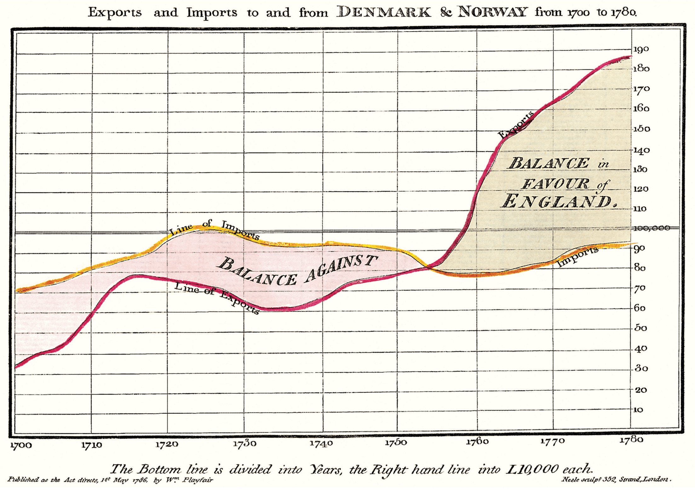
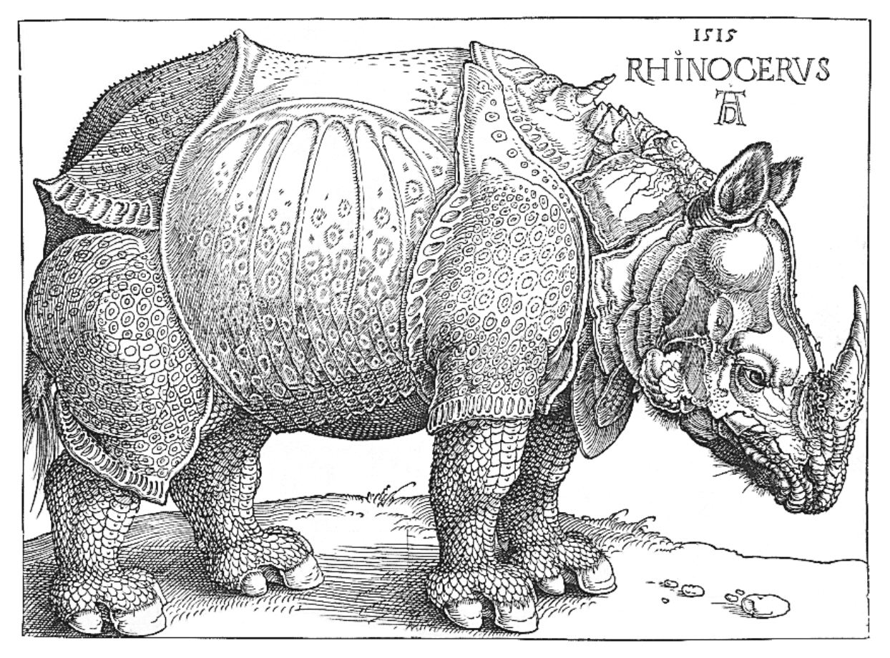
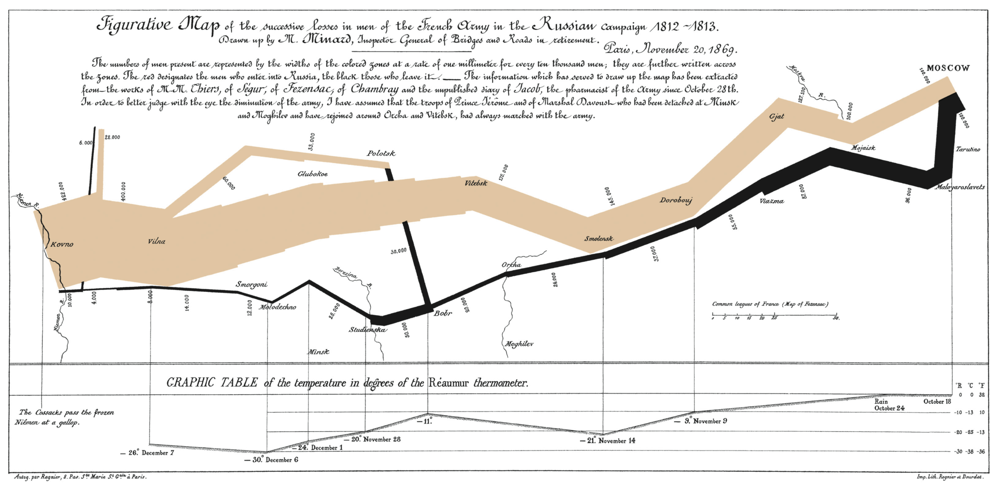
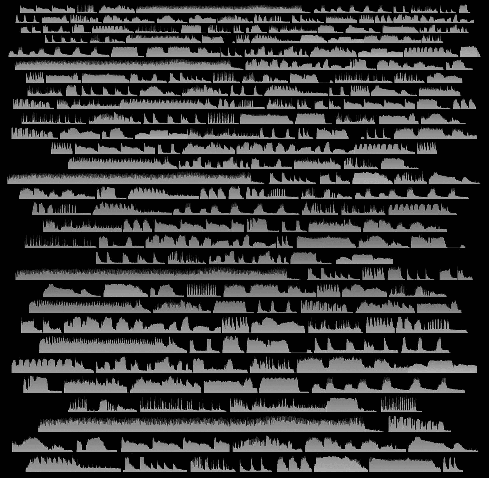

Tufte CSS
Dave Liepmann
Tufte CSS 用 Edward Tufte 在著作与讲义中的理念来排版网页文章。其风格以简洁、多用边注、图文紧密、字体讲究而著称。
Tufte CSS 由 Dave Liepmann 创建，现为 Edward Tufte 的项目，构想借鉴自 Tufte-LaTeX 与 R Markdown’s Tufte Handout format。感谢这两个项目的所有贡献者。
若发现可改进之处，欢迎到 GitHub 项目 tufte-css 提 issue 或 pull request。请先阅读贡献指南。
最后重申目标：网页不是印刷品，网页也不是书。所以 Tufte CSS 不是要主张“网站都该长成这副对 Tufte 著作的诠释模样”，而是想展示“Tufte 在印刷中发展出的一些技巧，我们发现有用；也许你也能让它们在网页上发挥作用”。它只是实现这组理念的一幅草图，是起点而非设计目标——任何项目都该按自身情况来呈现信息。
开始使用
使用 Tufte CSS：把 tufte.css 和字体目录 et-book 复制到项目目录，再在文档的 head 中加入：
<link rel="stylesheet" href="tufte.css"/>然后使用提供的 CSS 规则和本文档描述的约定即可。想要最佳效果，请常看源代码（View Source）和检查元素（Inspect Element）。
基础
区块与标题
文档用 body 内的 article 组织；每组逻辑相关的文字与标题用 section 包住。
Tufte CSS 用 h1 表示文档标题，带 subtitle 类的 p 表示副标题，h2 表示章节标题，h3 表示低层标题，不支持更细的层级。若忍不住想用 4 级或更深的标题，不妨重新设计文档：
值得一提的是，Feynman 讲义（3 卷）用 1800 页讲遍全部物理学，却只用了 2 级层级标题：章节，以及正文中的 A 级标题。它采用的也是句子的方法，句子依次累积成段落，而不是项目符号式的断句。加州理工的本科物理内容极为复杂，却并不需要一套繁复的层级来组织。
这段摘录也顺便演示了引用块：在 Tufte CSS 中，引用块只是用 blockquote 和 footer 写成的语义正确、样式轻量的 HTML。印刷版例子见 The Visual Display of Quantitative Information 第 20 页。
在Beautiful Evidence中，Tufte 每节开头都会留一点垂直空白、用不缩进的段落，并把句首几个词排成小型大写。我们用带 newthought 类的 span 实现，如本段开头所示；垂直间距则由 <section> 标签单独完成。要保持一致：本段只是演示，别交替使用标题元素和 newthought 手法，选定一种并坚持到底。
文字
纸面讲义是纯白背景，网页则更适合略带灰调的白与黑。Tufte CSS 用 #fffff8 和 #111111：它们与“纯”色几乎无法分辨，却能降低刺眼的对比度。正文只用灰阶，颜色留给插图和图像中的谨慎使用。
印刷中 Tufte 用的是专有字体 Monotype Bembo参见 Tufte 在 Tufte book fonts 主题中的评论。；数字格式里用现已开源的 ETBook 可达到相近效果，Tufte CSS 通过 @font-face 引用一个 .ttf 文件提供它。若 ETBook 失效，会优雅退回 Palatino、Georgia 等衬线字体。
另外，Tufte CSS 为粗体（strong）和斜体（emphasis）各配独立字体文件，而非让浏览器机械变换字形——这是字体排印的最佳实践。
偏好无衬线字体可用 sans 类，它依赖 Tufte 首选的无衬线字体 Gill Sans。
Tufte CSS 的链接与正文同色，悬停或点击都不变色。这里有一个不跳转的示例链接。链接带下划线，因为这是最广泛认可的可点击标志。 蓝色文字虽也可点击，却粗俗且分散注意力；有了下划线，它也就没必要了。
这些设计只是 Tufte CSS 的一种默认方案，其他方案也行。目标是：读句子时不受链接干扰，同时让人一眼认出链接。
题词
英语……之所以变得丑陋而不精确，是因为我们的思想愚蠢；但我们语言的邋遢，又使我们更容易产生愚蠢的思想。
对于一项成功的技术，现实必须优先于公共关系，因为大自然不会被欺骗。
我不画事物，我只画事物之间的差异。
想用几句引言开启页面或某一节时，就用题词。它模仿 Tufte 著作（尤其 Beautiful Evidence）中的章首题词，是加了少量专门样式的 blockquote。引文为斜体，出处放在 blockquote 内的 footer 中。本节题词给了三个例子，演示长短引文、带与不带 p 标签，以及如何用包裹类把多条引文组合在一起。
边注：脚注与页边注
边注是 Tufte 风格最鲜明的特点之一。这是一条边注。 它类似脚注，但不逼读者把视线跳到页脚，而是显示在侧边页边。也许你早已注意到本文档中的边注——眼力真好。
边注正是网页不同于印刷的好例子：视口够大时，Tufte CSS 把页边用来放边注、页边注和小图；视口较小时，这些元素先隐藏，由用户切换显示。目标是让旁白、引用等次要信息尽可能贴近所引正文，又不挡视线、不打断正文思路。
边注由两部分组成：正文中的上标引用编号，以及边注内容。前者只需在引用处放入一个 label 和占位 checkbox，如下：
<label for="sn-demo"
class="margin-toggle sidenote-number">
</label>
<input type="checkbox"
id="sn-demo"
class="margin-toggle"/>每条边注或页边注都要手动指定引用 id：把 for 和 id 中的“sn-demo”换成合适的描述符。用 sn- 前缀表示边注、mn- 表示页边注会很有帮助。
紧挨引用处放入边注内容，即带 sidenote 类的 span。它同样插在正文中间，但默认被推到页边或隐藏。请让 sidenote-number 的 label 贴近边注，以保证定位正确。
为获得最佳可读性，请把正文包在 section 中。
想要不带编号的边注，那就是页边注。
这是一条页边注，注意它前面没有编号。
宽屏上，页边注就是省略了引用编号的边注：少了打断正文的干扰，却多了“对号入座”的认知负担。窄屏上它与边注类似，只是显隐开关是符号而非编号。本文档用 ⊕（⊕），用哪个由你决定。
页边注的创建与边注相同，只是内容用 marginnote 类，label 和占位 checkbox 用 margin-toggle 类。上一段页边注的代码如下：
<label for="mn-demo" class="margin-toggle">⊕</label>
<input type="checkbox" id="mn-demo" class="margin-toggle"/>
<span class="marginnote">
This is a margin note. Notice there isn’t a number preceding the note.
</span>页边小图也用页边注的方式创建，下一节演示。
插图
Tufte 强调图文紧密：数据、图表、插图都要与讨论它们的文字放在一起。印刷中这意味着不把它们甩到单独一页；网页上则意味着无须点击、切换标签或滚动就能读懂图形和配文。
插图尽量用 figure 元素，它默认限制在正文栏内。不要把 figure 包进 p。标注或页边注放进 figure 内的普通页边注里。多数情况下直接把插图引入讨论主线，像这样：

p 中用页边注包住图片，如本段右侧所示。
需要满宽插图就加 fullwidth 类，并确保它在 article 内，即可占据屏幕（几乎）整个宽度。下面用 Edward Tufte 对拿破仑东征数据可视化的英译版演示。摘自 Beautiful Evidence 第 122-124 页。

代码
技术术语、编程词汇和代码示例都用 code 类表示（本文档即用它标注 HTML）。代码需用等宽字体以便排版和分析，同时要保持可读。为此 Tufte CSS 沿用 GitHub 的字体选择：从优雅但少见的 Consolas 一路平滑到可靠的老牌 Courier。
较长的代码示例放在 pre 内的 code 元素中，可更好地控制缩进与溢出：
;; Some code examples in Clojure. This is a comment.
;; applying a function to every item in the collection
(map tufte-css blog-posts)
;;;; if unfamiliar, see http://www.lispcast.com/annotated-map
;; side-effecty loop (unformatted, causing text overflow) - from https://clojuredocs.org/clojure.core/doseq
(doseq [[[a b] [c d]] (map list (sorted-map :1 1 :2 2) (sorted-map :3 3 :4 4))] (prn (* b d)))
;; that same side-effecty loop, formatted
(doseq [[[a b] [c d]] (map list
(sorted-map :1 1 :2 2)
(sorted-map :3 3 :4 4))]
(prn (* b d)))
;; If this proselytizing has worked, check out:
;; http://howistart.org/posts/clojure/1ImageQuilts
Tufte CSS 支持 Edward Tufte 与 Adam Schwartz 的 ImageQuilts。更多见 ET forum announcement thread。有些 quilt 边缘参差，有些平直。像普通 figure 一样引入即可。
下面这幅 ImageQuilt 纵览中国书法，因幅面宽大而放在满宽图中：
这幅 ImageQuilt 把 47 种动物叫声反复拼排，放在正文栏内。quilt 边缘参差，但图片本身仍是矩形。

结语
感谢 Edward Tufte 以其工作为我们开路；正是他友善而细致的编辑，才有这个项目的今天。实现中的一切错误当然都归我。